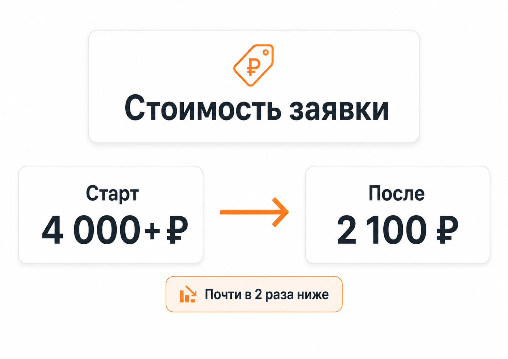

Блог о платном трафике
Реклама домов под ключ: как получать заявки на строительство
Реклама домов под ключ работает лучше, когда человек сразу видит предложение, соответствующее его задаче: тип дома, примерную стоимость, проекты, выполненные объекты и понятный следующий шаг. В этой нише недостаточно привести на сайт много посетителей. Нужно отсечь людей, которые просто смотрят проекты, и получить обращения от тех, кто действительно рассматривает строительство.
Один из основных каналов для такой задачи - Яндекс Директ. Он позволяет работать как со сформированным спросом на Поиске, так и с более широкой аудиторией в Рекламной сети Яндекса. Сейчас эти размещения можно настраивать в рамках Единой перфоманс-кампании, выбирая необходимые места показа и аудитории.
С чего начинается реклама строительства домов
Первая ошибка - запускать рекламу на слишком общее предложение вроде «Строим дома под ключ». Практически каждая строительная компания может сказать то же самое.
Перед запуском я сначала разбираю само предложение:
- какие дома строит компания;
- в каких регионах работает;
- из каких материалов;
- есть ли готовые проекты;
- можно ли показать ориентировочную стоимость;
- какие объекты уже построены;
- какие работы входят в цену;
- есть ли собственные бригады;
- какой следующий шаг предлагается посетителю сайта.
Человеку обычно нужно больше информации, чем просто кнопка «Оставить заявку». Строительство дома требует крупных вложений, поэтому потенциальный заказчик сравнивает подрядчиков, проекты, технологии, комплектации и стоимость.
Именно поэтому реклама строительной компании должна рассматриваться вместе с сайтом и предложением, а не отдельно от них.
Какие запросы использовать для рекламы домов под ключ
Спрос лучше разделять по смыслу, а не собирать все фразы о строительстве в одну группу.
| Сегмент | Примеры намерения пользователя |
|---|---|
| Общий спрос | построить дом, строительство дома под ключ |
| По материалу | дом из кирпича, дом из газобетона, каркасный дом |
| По проекту | проекты домов под ключ, строительство дома по проекту |
| По стоимости | сколько стоит построить дом, цена дома под ключ |
| По площади | строительство дома 100 м², дом 150 м² под ключ |
| По географии | строительство дома в конкретном городе или области |
Это разные потребности. Человек, который уже ищет строительство кирпичного дома определенной площади, обычно находится дальше по воронке, чем пользователь с запросом «красивые частные дома».
Но чрезмерно дробить кампанию тоже не нужно. Современный Яндекс Директ активно использует алгоритмы и автотаргетинг, поэтому структура должна помогать системе получать данные, а не создавать десятки практически пустых групп.
Подробнее о принципах современной настройки - в статье «Как настроить рекламу в Яндекс Директ в 2026 году».

Поиск и РСЯ решают разные задачи
Для рекламы строительства домов я обычно рассматриваю Поиск и РСЯ отдельно.
Поиск
Здесь можно работать с человеком в момент, когда он сам ищет подрядчика, стоимость строительства или конкретный тип дома.
Преимущество такого трафика - сформированный спрос. Недостаток - конкуренция с другими строительными компаниями за одних и тех же пользователей.
Особенно важно следить за реальными поисковыми запросами. Даже тематически подходящая фраза может приводить людей, которые ищут картинки, бесплатные проекты, самостоятельное строительство или информацию для учебы.
РСЯ
Рекламная сеть Яндекса позволяет обращаться к аудитории за пределами поисковой выдачи. Здесь особенно важны изображения домов, понятный оффер и правильная посадочная страница.
В РСЯ я бы не пытался рассказать всю историю компании внутри одного объявления. Задача объявления - заинтересовать подходящего человека и перевести его на страницу, где он сможет посмотреть проекты и условия.
Отдельно механизм этого размещения разобран в статье «Что такое РСЯ в Яндекс Директ».
Какой сайт нужен для рекламы домов под ключ
В строительстве частных домов слабый сайт способен испортить даже хорошо настроенную рекламу.
На посадочной странице желательно быстро показать:
- какие дома строит компания;
- реальные фотографии объектов;
- варианты проектов;
- планировки;
- используемые материалы;
- что входит в комплектацию;
- ориентиры по стоимости, если их можно корректно указать;
- географию строительства;
- этапы работы;
- гарантии;
- способы связаться с компанией.
Необязательно превращать первый экран в каталог из двадцати преимуществ. Посетитель должен за несколько секунд понять, подходит ли ему предложение.
Например, если компания специализируется на кирпичных домах, это лучше сообщить сразу, а не заставлять пользователя искать информацию среди каркасных домов, бань, фундаментов и ремонта квартир.
Для рекламного трафика иногда имеет смысл создать отдельный лендинг под конкретное направление. Подробнее об этом - в материале «Что такое лендинг в Яндекс Директе и какой сайт выбрать для рекламы».
Что предлагать вместо обычной формы «Оставить заявку»
Человек редко готов заказать строительство дома после первого посещения сайта. Поэтому кроме формы обратного звонка полезно давать действия, соответствующие стадии выбора.
Например:
- получить расчет стоимости;
- подобрать проект;
- обсудить строительство на своем участке;
- получить смету;
- записаться на консультацию;
- посмотреть подходящие проекты.
Главное - чтобы предложение было настоящим. Не стоит обещать точную стоимость за минуту, если специалист все равно сможет назвать ее только после уточнения десятка параметров.
Форма тоже не должна превращаться в анкету на несколько экранов без необходимости. Чем больше данных вы требуете до первого контакта, тем выше вероятность, что потенциальный заказчик уйдет к другой компании.
Реальный пример рекламы строительства домов
У меня есть отдельный кейс по компании, которая занимается строительством кирпичных домов.
Работу начали 2 мая 2022 года. Для привлечения обращений использовались кампании на Поиске и в РСЯ.
На первой неделе стоимость заявки превышала 4 000 рублей. По мере накопления статистики, анализа трафика и оптимизации кампаний к концу месяца она снизилась примерно до 2 100 рублей - почти в два раза.
При этом на тот же сайт параллельно запускалась реклама со стороны клиента. Большая часть заявок приходила именно из кампаний, которые вел я.
Для меня этот кейс хорошо показывает специфику ниши: стартовые показатели еще мало о чем говорят. После запуска нужно смотреть реальные запросы, аудитории, объявления и конверсии, а затем постепенно убирать источники неэффективного расхода.
Кейс: как снизили стоимость заявки на строительство домов почти в 2 раза за месяц.

Как оценивать результат рекламы
Ориентироваться только на цену заявки в строительстве домов неправильно.
Два источника могут давать обращения по одинаковой цене, но в первом случае люди действительно имеют участок и собираются начинать строительство, а во втором просто узнают стоимость на будущее.
Поэтому я смотрю минимум на несколько уровней:
- Расход и количество переходов.
- Количество заявок и звонков.
- Стоимость обращения.
- Долю целевых обращений.
- Количество консультаций или встреч.
- Количество подготовленных расчетов и смет.
- Заключенные договоры и выручку.
Чем длиннее цикл принятия решения, тем важнее передавать данные от отдела продаж обратно в рекламу.
Яндекс Директ позволяет оптимизировать кампании по конверсиям, а стратегия «Максимум конверсий» автоматически подбирает ставки с учетом выбранных целей и ограничений. Для ее работы используется счетчик Яндекс Метрики.
При этом алгоритму нужно давать нормальную цель. Оптимизация по любому нажатию на кнопку может привести к большому количеству формально дешевых, но бесполезных действий.
Подробнее о выборе целей и оценке результатов - в статье «Конверсия в Яндекс Директ».
Почему дешевые заявки не всегда выгодны
В рекламе домов под ключ легко увлечься снижением CPL.
Допустим, один рекламный сегмент дает большое количество дешевых обращений, но большинство пользователей интересуются домами значительно дешевле минимальной стоимости строительства компании.
Другой сегмент дает заявки дороже, зато люди имеют участок, подходящий бюджет и хотят начать строительство в ближайшее время.
Для бизнеса второй вариант может оказаться намного выгоднее.
Поэтому после запуска я стараюсь получить от клиента обратную связь по обращениям: что спрашивал человек, какой бюджет называл, есть ли участок, на каком этапе находится выбор подрядчика.
Без этой информации специалист по рекламе видит только верхнюю часть воронки.
Что чаще всего ухудшает результат
По моему опыту, проблемы обычно появляются не из-за одного конкретного параметра в Яндекс Директе.
Наиболее типичные причины:
- слишком общее предложение;
- реклама всех строительных услуг на одной странице;
- отсутствие выполненных объектов;
- нет ориентиров по стоимости;
- слабая мобильная версия сайта;
- неправильная география показов;
- большое количество информационного трафика;
- отсутствие нормальной аналитики;
- оценка рекламы только по количеству заявок;
- медленная обработка обращений.
Поэтому настройка кампаний - лишь часть работы. На своем сайте я отдельно описываю подход, при котором до и после запуска анализируются оффер, посадочная страница, аналитика и вся воронка привлечения клиента.
Сколько нужно денег на рекламу домов под ключ
Универсального рекламного бюджета для строительной компании нет.
Он зависит от региона, типа домов, конкуренции, сезона, охвата и стоимости целевого обращения именно для конкретного бизнеса. Поэтому цифра, полученная в чужом кейсе, не должна автоматически становиться бюджетом для нового проекта.
Перед запуском лучше определить допустимую стоимость привлечения клиента исходя из экономики компании, а затем проверить гипотезу реальным трафиком.
Для предварительной оценки можно использовать инструменты Яндекс Директа и прогнозировать возможный объем трафика, но итоговую экономику все равно показывает только фактическая рекламная кампания.
По этой теме есть отдельный материал: «Как рассчитать бюджет Яндекс Директа».
Что в итоге
Эффективная реклама домов под ключ строится вокруг всей цепочки: спрос пользователя, объявление, предложение на сайте, заявка, работа отдела продаж и договор.
Яндекс Директ способен приводить людей, которые уже ищут подрядчика для строительства, но сам по себе рекламный кабинет не решает проблемы слабого предложения или сайта.
Поэтому при запуске я сначала разделяю спрос, настраиваю аналитику и проверяю посадочную страницу, а после появления статистики оцениваю не только стоимость заявки, но и качество обращений. Именно это позволяет понять, какая реклама действительно приводит потенциальных заказчиков на строительство дома.